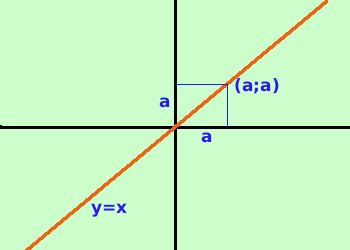

| y = x trasforma ogni valore sull'asse x nello stesso valore sull'asse delle y (ad esempio trasforma 3 in 3, 7 in 7, -1 in -1, ...) e quindi del suo grafico faranno parte tutti i punti che hanno uguali la x e la y come (0 ; 0) (3 ; 3)  (1,5 ; 1,5) . . . . . . . . . E tutti questi punti formano la bisettrice del primo e terzo quadrante |